Las selvas secas crecen en lugares cálidos en donde las estaciones son muy marcadas. Durante la temporada de lluvias, la selva está muy verde, pero en la temporada de secas, cuando no llueve, las plantas pierden sus hojas.Sus árboles de hojas pequeñitas no son muy altos y como entra mucha luz, crecen gran cantidad de arbustos y pequeños árboles, es difícil caminar en estas selvas. Entre los árboles hay muchos parientes del copal y del frijol de donde cuelgan los nidos de las calandrias.
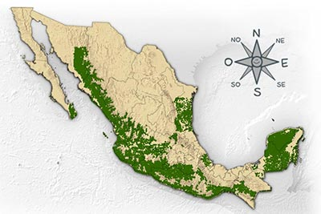
Bolsero Dorso Rayado
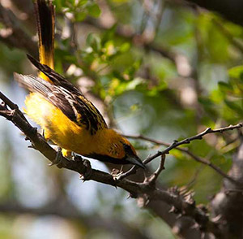
Soy un ave muy llamativa de color anaranjado con negro. Mis nidos son fáciles de reconocer ya que son grandes obras que cuelgan de los árboles como largas bolsas. También nos llaman calandrias.
Murciélago Trompudo
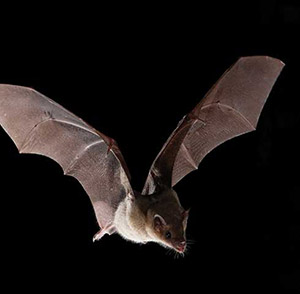
Soy un murciélago nectarívoro, eso quiere decir que me alimento de néctar de las flores y cuando las visito les comparto el polen de otras flores que se me queda pegado en el pelo. Paso el día escondido en cuevas y en otros lugares oscuros y salgo al anochecer en busca de aventuras.
Iguana Verde
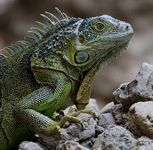
Soy una gran lagartija. Pongo entre 15 y 60 huevos de donde nacen pequeñas iguanitas de color verde brillante. Me encanta trepar a los árboles a comer flores y hojas jóvenes y frescas, sobre todo si están cerca de algún río, ya que cuando me asustan brinco al agua y desaparezco nadando rápidamente.
Cigarra
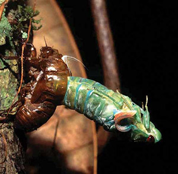
¿Nos has oído cantar? Nos conocen como cigarras o chicharras. Somos insectos parientes de las chinches. No somos los únicos insectos que producimos sonidos pero si somos los más escandalosos. Nos alimentamos de la savia de las plantas. Nuestros pequeños pueden vivir más de 10 años enterrados en la tierra.
Apamate Rosa
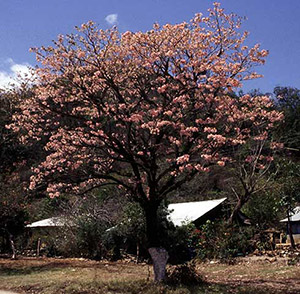
También me llaman maculis o palo de rosa. Modestia aparte, soy uno de los arboles más distinguidos de la selva seca, ya que mis abundantes flores rosas resplandecen en el paisaje antes de la época de lluvias. Mis semillas son aladas y pueden viajar grandes distancias impulsadas por el viento.
Chachalaca Pálida
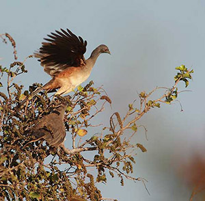
Soy un ave del tamaño de una gallina. Prefiero caminar y trepar a las ramas de los árboles que andar volando. Me gusta hacer mucho ruido por las mañanas y las tardes en compañía de la familia. Me alimento de granos y algunos sabrosos insectos.
Sapo Borracho
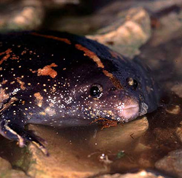
Soy el sapo borracho, pero no creas que bebo demasiado. Me llaman así por el sonido que produzco. También me conocen como Uo, y como sapo excavador mexicano. Paso grandes temporadas enterrado y cuando caen las lluvias, salgo rápidamente a cantar para encontrar pareja. Somos inconfundibles.
Armadillo de Nueve Cintas
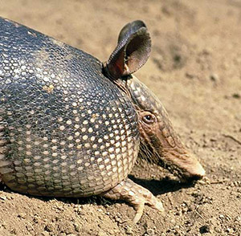
Soy un mamífero muy especial ya que visto una armadura que me protege contra muchos depredadores. Me encanta escarbar el suelo en busca de insectos y sus deliciosas larvas. Cuando tengo hijos siempre son cuatrillizos.
Zorrillo Pigmeo
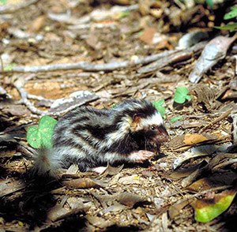
Soy el más pequeño de los zorrillos manchados. Vivo exclusivamente en las selvas secas de la costa del Pacífico. Me alimento de insectos, de aves, huevos, pequeños mamíferos y a veces de frutas y semillas. Y si me asustas me defiendo con mi inconfundible aroma.
Alacrán
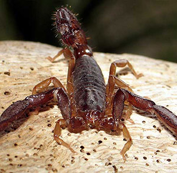
Soy pariente de las arañas y de los elegantes tendarapos. Tengo ocho patas, un par de amenazantes pinzas y una veloz cola con un aguijón al final. De alrededor de 260 especies de alacranes que vivimos en México, solamente 16 son realmente venenosos.
Lagarto de Chaquira
Soy un lagarto cabezón y mi piel es como chaquira. Me alimento de los huevos de las aves. Al igual que mi pariente el lagarto de Gila, tengo un veneno muy poderoso, pero no te preocupes, soy lento y difícilmente puedo causar problemas.
Palo mulato
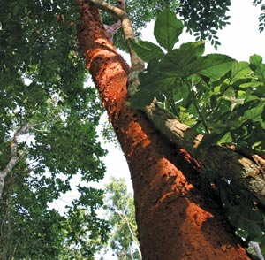
Soy un árbol muy fácil de reconocer. Mi corteza es rojiza y cuando se descarapela, mi tronco queda muy suavecito. Mi madera se utiliza para la construcción de casas, canoas y cercas. Mis parientes son los olorosos copales.
Culebra Bejuquilla Verde
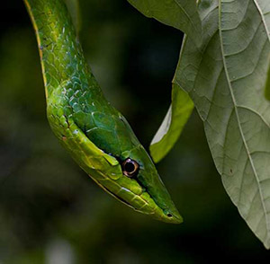
Soy una culebra muy esbelta. Mi color verde me protege ya que me confundo con la vegetación en donde vivo. Me encanta treparme a los árboles para buscar lagartijas o ratones desde lo alto. Mi cabeza parece una lanza y puedo abrir una gran boca para atrapar a mis presas.
Cacomixtle
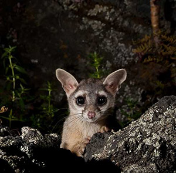
Soy el escurridizo cacomixtle. Soy un mamífero pariente del mapache. Mi cola es larga y con anillos blancos y negros. Por las noches, trepo a los árboles con gran agilidad donde busco pequeños animales que me sirvan de cena.